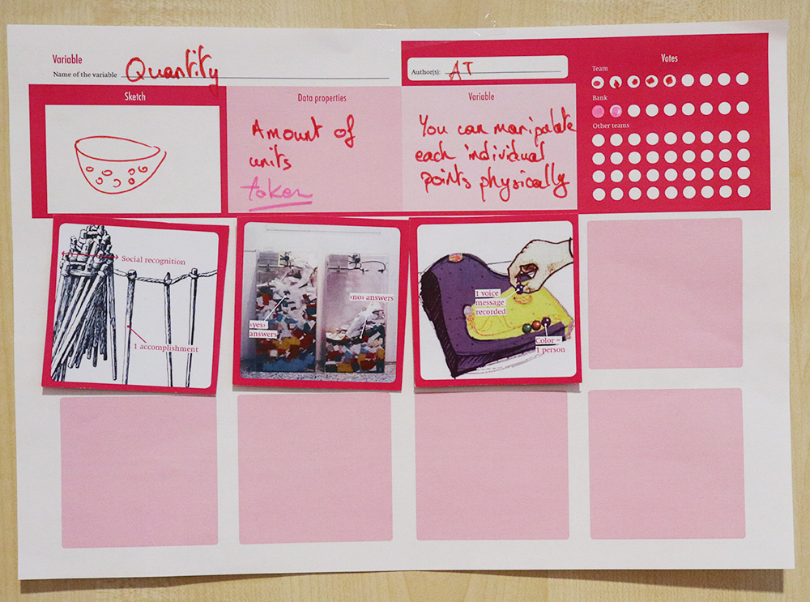

You Name It !
Data Physicalization Card Deck And Activities
"You name it" is deck of cards and activity to support research and education about / on data physicalization. The card deck and the activity was originaly designed to support the idenfitication of meaningfull categories (design patterns, physical variables, design space ...) from the data physicalisation list but it could be extend to other applications.
To better understand the world humans often organised things into categories, name, attribute definition to them. This is easy to do when we are a small group of people, with a slimited number of objects. But it seems more and more complicated while the number of people increase, also when the number of object increase. The activity "You name it" have been designed to support a group collective classification during a workshop, a classroom, or other events in a 3 hours to 2 days workshop.
Digital dataset and list are usefull but if we want to collectively organised, tag, and classify a group of physicalization why not making it in the physical space? It have some potential benefits like supporting colocated synchrone interactions, serendipity, and discussions. This is why we designed this card deck.
This activity have been designed to be scalable from 20 to 100 people for 2 to 4 hours. But it could be adapted for a smaller number of people and a smaller periode.
Card Decks
The card deck is composed of approximatively 280 cards, each card represent one entry of the data physicalisation list. Each card is composed by a picture of a physicalization on the front, and on the back are printed the title, a short description, the approximate date of creation, and the URL to the data physicalisation list. Each deck are produced with different colours (red, green, light green, blue, light blue, yellow, brown and crimson). Having card decks of different colours provide a helpfull support when the activity is done with different team. Each team can have is own colour.
A full deck is eight colours of 280 cards, in total 2240 cards.
To have one you can Order a card deck or print on your own printer.
IDENTIFYING MEANINGFULL CATEGORIES
The goals of the activity is to identify, infer and collect meaningfull categories produced by the participants. But what types of categories do we want? Identifying meaningfull categories could be an endless task if we do not have a specific goals. We have tried this workshop with two different types of categories:Design pattern sheets
[A design pattern is] a problem that occurs over and over again in our environment, and then describes the core of the solution to that problem, in such a way that you can use this solution a million times over, without ever doing it the same way twice. — Christopher Alexander
We find the concept of design pattern particularly meaningfull for classifying the physicalization list, this is why we designed a "design pattern sheet".
 Physical Variables sheets
Visual variables are the visual element on which we can map data during visualization. Jacques Bertin in 1967 intially identify this concept and list seven of them: position, size, shape, value, color, orientation, and texture. This seminal work was deeply influencial for the information visulization community. However the Work of Bertin was only focus on printed data visualization and not physicalization ones. Discovering physical variable is yet a work to be done, so we designed a "physical pattern sheet". On the left an exemple produced by Jason Alexander and Tim Dwyer.
Others ?
During the Dagsthul seminars about dataphysicalization, we provide multiples card decks to the participant. The goals was to support their discussion, group activities and brainstorming activities while providing a reference system and without constraining into specific types of categories. Sometime they created some classifications based on their own needs. Sometime they used it as a presentation tools. Maybe you can create your own categories sheet to? On the right a presentation of a group work by Sarah Hayes.
SETUP THE ACTIVITY
You first need to establish teams composed of 3 to 10 peoples and a group of bankers. The maximum number of team is 8. The role of the team will be to discover as many patterns as possible, the role of the bankers is to validate the consistency of this patterns. The bankers. The bankers could be composed by experts or by one persons from each teams. Before the activity the facilitators have distribut to each table 20 cards of the same colour.
Check list.
Each team requiere on their table the following:
☐ a dedicated colour for the card deck,
☐ 20 cards, as well as
☐ group of categories sheet of the same colour (design pattern, or physical variables),
☐ some pens of the same colour and
☐ some bluetack or tapes.
DURING THE ACTIVITY
The activity happen in seven steps.
0. Each team is invited to look at the cards they have on their table and try to identify similarities and differences.
1. Identify a meaningfull categories inside the set of card. When you have one fill the categorie template sheet, and tape the cards corresponding to this catergorie on it.
2. Present, discuss the categorie you find with your team mate and get agreement signature on the categorie sheet
3. Bring your categorie sheet to the bank. And wait your turn.
4. Explain what your categorie is to the bank in less than 30 seconds.
5. Get an approval signature(s) from the bankers, or s critical feedback. If you do not get approval go back to step 2.
6. Receive more cards from the bank. Bring them to your team!
7. Identify more categories ! Go back to step 1.
AFTER THE ACTIVITY
According to the time of the workshop you can either start a discussion at that point.
activity-discussion.jpgRESULT OF THE ACTIVITY
PREVIOUS USAGE
The activity have been used in 2018 during the IEEE VIS 2018 Workshop "Toward a Design Language for Data Physicalization" and the Dagshtull seminar of data physicalization 18441 and during the Master Class Data Driven Story telling in Paris.
The goal of the activity was to identify commonalities and differences between physicalizations of the data phys list. But maybe you can design your own activity, if you do it send us an email and we will update this page.
Download the IEEE VIS 2018 activity presentation slide deck : PDF | Keynote | PowerPoint
DOWNLOAD
Order a Card Deck -We plan to print a small series for the card deck. If you want one card deck of 240 or the 8 colored card deck 2240 cards, we can ship one to you. A small fee will be asked to you to cover the processing, printing and shipping cost but we will not make profit out of it. To order a Card Deck please fill this form.
Activity slides deck -
Categories templates sheets
Design pattern - PDF
Physical Variables - PDF
Card Deck - Print on your own !
| Deck color | JPEG | Print at home format | |
| Blue | JPEG format | PDF format | Print at home format |
Download all the Card Deck ( XXX Mo) : PDF
Download the slide deck : PDF
Download the Design pattern templates : PDF
Download the Physical varaible templates : PDF
Download the Instruction Sheet: PDF
Download All: PDF
CREDITS
This work is licensed under a Creative Commons Attribution-ShareAlike 4.0 International License. If you reuse or adapt it, please reference this page and the authors. See BibTeX for citing.